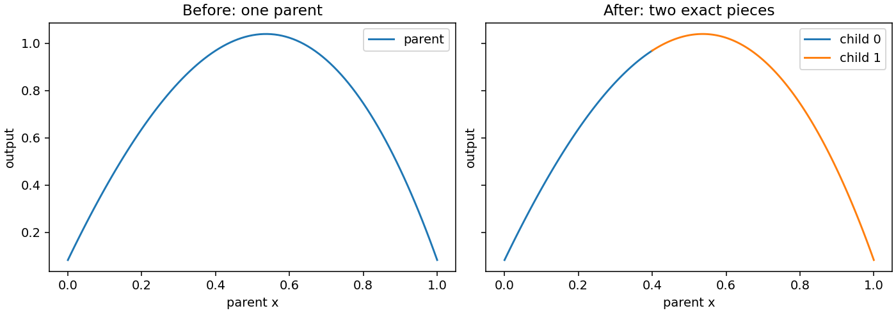

Exact local subdivision
When to split a model
Subdivision replaces one fitted cell by two local Bézier models whose images together reproduce the parent. Use it to isolate a region for inspection, evaluate pieces in separate downstream systems, or prepare a later local refinement. It is useful when one global model spans regions with different geometric scales and you want explicit charts for those regions.
Subdivision itself is an exact change of parameterization. It does not collect observations, optimize coefficients, change polynomial degree, or reduce prediction error. If a parent underfits a localized feature, its exact children still underfit that feature. Error reduction requires an additional refitting step, usually with new observations or independently adjustable piecewise coefficients. Keep this distinction visible in before/after plots.
subdivide acts on one selected cell. It returns a SubdivisionResult
with two models and two parameter maps. It does not automatically update
neighboring cells of an assembled domain, rebuild shared topology, or create
a globally remeshed model archive. The maps retain the selected parent cell
ID so that evaluation can be traced back to the original model.
A complete exact split
The example fits a scalar quadratic on a segment and splits the parameter edge at fraction .4. Each child has its own full local barycentric domain. The map converts those local points back to the appropriate parent interval.
import torch
from torch_bsf import BezierSpace, Samples, fit
from torch_bsf.sampling import grid
from torch_bsf.splitting import EdgeSplit, LongestEdge, subdivide
space = BezierSpace.simplex(1, degree=2)
observations = grid(space, 8)
x = observations.parameters[:, 1]
model = fit(space, Samples(observations, x.square()[:, None])).require_success().model
pieces = subdivide(model, cell=0, policy=EdgeSplit(0, 1, fraction=.4))
for child, mapping in zip(pieces.models, pieces.maps, strict=True):
child_points = grid(child.space, 40)
parent_points = mapping.to_parent(child_points)
assert torch.allclose(child(child_points), model(parent_points), atol=1e-12)
assert len(pieces.models) == len(pieces.maps) == 2
The selected parent is unchanged. Child coefficient tensors retain its dtype and device, while each child receives a single-cell space. The representation is local even if the original model was assembled from many cells. Always pair each child with its corresponding map; swapping maps produces an incorrect comparison despite identical coordinate widths.


Fig. 11 Before: one fitted cubic. After: two exact pieces at fraction .4, plotted against parent coordinates. The curves join without changing the represented response. The generator checks maximum child/parent discrepancies below 1e-12; the figure does not claim a reduction in fitting error.
The figure uses the noisy-data cubic from
examples/generate_guide_figures.py, while the executable example above
uses an exactly representable quadratic. The same map invariant applies in
both cases. The figure’s measured errors are stored in
metrics.json.
Understand the split fraction
For an edge joining factor vertices \(v_i\) and \(v_j\), fraction \(s\) inserts a new vertex
The first child replaces vertex \(j\) by the new vertex, and the second replaces vertex \(i\). With child coordinates \(u\), the first map is
while the second map is
Other coordinates in that factor are unchanged. Other factors of a product are also unchanged. These formulas preserve nonnegativity and the per-factor sum of one, so each full child simplex maps into its parent piece.
The first piece covers parent points satisfying \(t_j\le s(t_i+t_j)\) and the second covers \(t_j\ge s(t_i+t_j)\). Points on the dividing face belong to both. They must produce the same output under either exact representation. The child coefficients are obtained by Bézier subdivision, not by fitting outputs sampled at a few new locations.
Increasing fraction moves the new vertex toward vertex j. It enlarges
the first child’s portion of the selected edge and shrinks the second’s.
fraction=.5 bisects it. Values near zero or one create a very small
piece, which may be useful for a localized region but can magnify coordinate
conversion errors. Fractions must be strictly between zero and one; endpoints
would create a degenerate piece.
i and j are distinct vertex indices within the selected factor,
not global coefficient indices or output-coordinate indices. On a prism of
type (2, 1), factor=0 selects the triangular factor with three vertices,
while factor=1 selects the segment factor with two. Raising polynomial
degree does not add vertices to these factors. Check geometry rather than
control-net size when choosing an edge.
Choose a policy
Policy |
Selection |
What to check |
|---|---|---|
|
Explicit edge and location. |
Use when the region of interest is known in parameter coordinates. |
|
Longest chord between selected cell vertex images. |
Output units affect which chord is longest. |
|
Edge/fraction minimizing the sum of unweighted child MSEs over a grid. |
Groups current errors; does not refit or guarantee lower error. |
LongestEdge is a geometry heuristic based on vertex chords in output
space. It does not measure the arc length of a curved edge or locate the
largest curvature. A loop whose endpoint images coincide can have a short
chord despite a long curved path. Rescaling one output coordinate can change
which chord is selected, so keep units consistent when comparing policies.
ResidualSplit requires equally weighted observations on the selected
cell. It uses current model residuals to assess how observations group into
two pieces. A larger resolution examines a finer split-fraction grid and
costs more evaluation work. It does not increase the model’s degree or add
training points. Since the score sums two child means rather than recomputing
a single observation-weighted global MSE, it can favor partitions with very
different point counts. Inspect those counts and the selected location before
interpreting the policy as an accuracy improvement.
No policy changes the exactness guarantee: once an edge and fraction have been selected, the two local models represent the same parent function. Choose a policy according to the next operation, such as balanced local data sets or a physically meaningful region boundary, rather than expecting one policy to repair the parent’s bias automatically.
Map existing observations into children
A child model expects child coordinates. Passing parent coordinates directly may produce a plausible but unrelated response. Use the inverse map to obtain both transformed coordinates and a membership mask:
first_child = pieces.models[0]
first_map = pieces.maps[0]
local_points, mask = first_map.from_parent(observations)
assert len(local_points) == int(mask.sum())
assert torch.allclose(first_child(local_points), model(observations)[mask], atol=1e-12)
local_values = x.square()[:, None][mask]
local_samples = Samples(local_points, local_values)
local_fit = fit(first_child.space, local_samples).require_success()
assert local_fit.metrics["data_mse"] < 1e-24
from_parent ignores rows from other parent cells and returns a mask over
the original batch. Apply that mask to values and weights as well as parameters.
The returned child Points use the local single-cell ID. Do not keep the
parent’s cell ID when feeding them to the child. To compare the child with
an assembled parent, call to_parent so the correct original ID is restored.
Points on the cut can appear in both child data sets. Decide whether that is desired for subsequent fitting and evaluation, and avoid double-counting them in a pooled global error. Exact children agree on the cut, but two independent refits need not agree there. A shared continuity constraint or a newly assembled domain is required if that equality must remain exact after coefficients move.
Refitting and recursive use
If the goal is a more accurate piecewise surrogate, first preserve the exact split as a baseline. Map observations, inspect per-piece coverage, obtain additional true responses where needed, and refit each admissible model. Compare every candidate in parent coordinates on an independent evaluation set. This makes it clear whether improvement comes from new information, extra piecewise freedom, or merely a denser plot.
Refitting the same degree on smaller domains can resolve localized behavior, but it increases total independent coefficients and may overfit a small child with few observations. Check free-control count and data rank separately for each child. Keep important boundary values fixed or compile a glued space if the pieces must remain continuous. Smoothness penalties within separate child models do not by themselves enforce agreement across their interface.
For recursive subdivision, each returned map relates one level of child coordinates to that level’s parent. Compose the maps in order to reach the original chart, and retain the path of cell IDs. Repeatedly splitting does not automatically compose maps or maintain a hierarchy for you. Save the hierarchy in application metadata if downstream consumers need it.
A practical stopping rule considers local held-out error, minimum sample count and smallest permitted region size. Stopping only when training error is tiny can generate many unsupported pieces. A split at an extreme fraction can also leave one child without enough informative measurements; check this before launching a local degree search or additional experiment batch.
For adjacent cells in an assembled space, independently subdividing one patch leaves neighboring topology unchanged. The returned models can be visualized locally, but they are not a conforming replacement mesh. Rebuild and validate that mesh explicitly when it is required. See Single and assembled domains for shared coefficient construction, Fixed controls for exact boundary values, and Cross-validation and degree search for deciding whether additional local polynomial capacity is supported by independent errors.
Keep comparisons in the same physical coordinates
A useful split report includes the parent cell, factor and edge, the chosen fraction, child observation counts, and the maximum child-versus-parent prediction difference before any refit. Then report independent errors after refitting as a second comparison. This sequence distinguishes exact geometry preservation from an actual improvement in the surrogate.
For a scalar graph, plot against the parent parameter or a known physical coordinate, as the figure does. Plotting both children against their own local zero-to-one coordinate stretches each piece to the same width and can make them appear unrelated to the parent. For an output-space image, use the same projection and common axis limits. A different control polygon after splitting is expected and is not itself a change of the represented function.
Retain original observation IDs when applying membership masks so that later error reports can identify repeated cut-boundary rows. In a recursive process, store the complete mapping path beside each leaf model. A local model archive alone cannot reconstruct which portion of the original experiment its local coordinates describe.